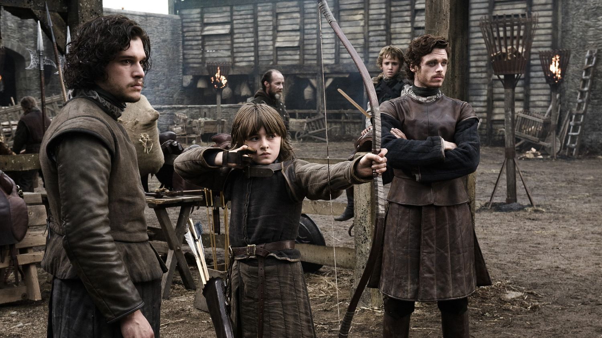
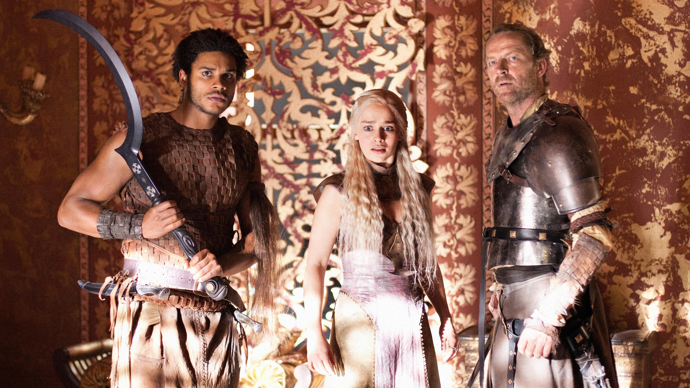

Temporada 1
- Capítulo 1: Winter Is Coming — El inicio de la historia y la llegada del Rey a Invernalia.
- Capítulo 2: The Kingsroad — Los Stark se separan y Arya recibe su espada.
- Capítulo 3: Lord Snow — Jon llega al Muro y Ned a Desembarco del Rey.
- Capítulo 4: Cripples, Bastards, and Broken Things — Tyrion ayuda a Bran y se revelan secretos.
- Capítulo 5: The Wolf and the Lion — Intrigas en la corte y la primera gran pelea.
- Capítulo 6: A Golden Crown — Viserys recibe su corona dorada.
- Capítulo 7: You Win or You Die — Ned confronta a Cersei y todo cambia.
- Capítulo 8: The Pointy End — El caos se desata en Desembarco del Rey.
- Capítulo 9: Baelor — Un destino inesperado para Ned Stark.
- Capítulo 10: Fire and Blood — El nacimiento de los dragones y el nuevo rumbo de la serie.

Temporada 2
- Capítulo 1: The North Remembers — El Norte se prepara para la guerra.
- Capítulo 2: The Night Lands — Arya huye y Tyrion toma poder en la corte.
- Capítulo 3: What Is Dead May Never Die — Theon toma una decisión crucial.
- Capítulo 4: Garden of Bones — Stannis y Renly se enfrentan.
- Capítulo 5: The Ghost of Harrenhal — Renly cae y Arya encuentra un aliado.
- Capítulo 6: The Old Gods and the New — Theon toma Invernalia.
- Capítulo 7: A Man Without Honor — Jaime escapa y Daenerys pierde a sus dragones.
- Capítulo 8: The Prince of Winterfell — Robb Stark enfrenta traiciones.
- Capítulo 9: Blackwater — La gran batalla en Desembarco del Rey.
- Capítulo 10: Valar Morghulis — Arya recibe una moneda misteriosa.